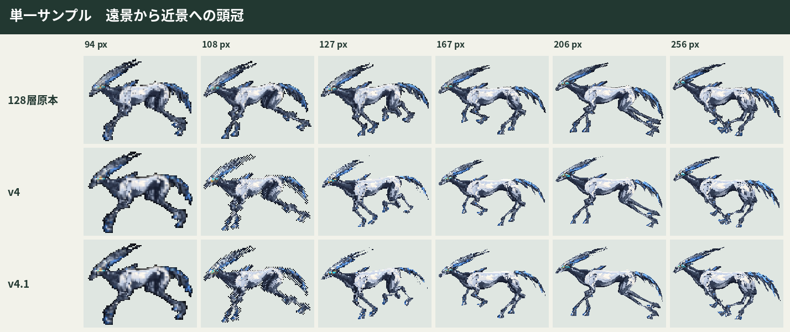
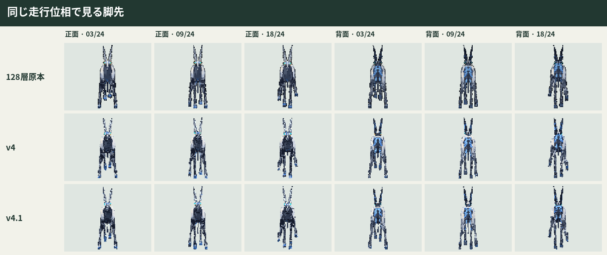
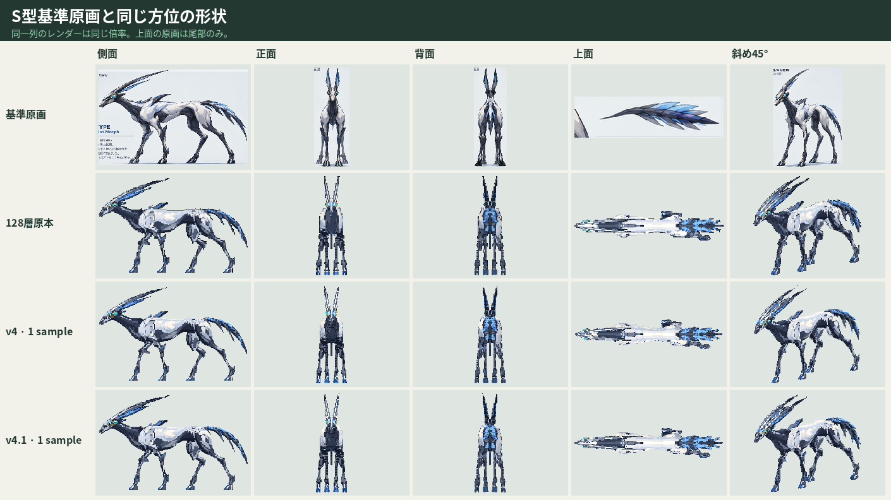

レース計測デモを開くS型 v4.1 採用試験
REVISE レースと同じ単一サンプルで頭冠の目標を達成した。混在50体・100体の平均が30fpsを下回り、遅いフレームには33.3msのフレーム予算を大きく超えるものがある。物理Android端末とGPU搭載PCでの結果は未取得。
頭冠と脚先
姿勢ごとの128層原本を基準に、同じ投影位置で輪郭の共通部分を和集合で割った。走りながら投影幅を60→262pxに変えた73時点で、頭冠の中央値はv4の0.72419から0.79575に回復した（v3基準0.763）。最低値は0.59504→0.64683。スプライトと表面が実際に重なる103–113pxは3時点で、中央値は0.72845→0.75000。全73時点には切替後の中・近景も含む。標本用4サンプルAAはこの比較で使っていない。

24姿勢の正面と背面では、原本で分離した脚先186箇所のうち、半分以上重なり別々に識別できた数は169→174。半分以上重なった数は169→175。5視点×24姿勢で足元IoUの中央値は0.75000→0.77272、最低値は0.65839→0.63871。全身の中央値は0.86135→0.84286、尾部は0.74574→0.70337。頭冠と脚先の改善に対し、胴・尾のシルエットに修正が残る。


近・中景の表面を既存ボクセルの外面に合わせ、頭冠の両側と脚先の支持点を保護した。量子化前に各姿勢の占有範囲に収め、足底の負座標が符号なし整数で反転する問題を修正した。17色の既存ペイント、24走行姿勢、接地補正と遠景の方位スプライトを共用する。全時点の品質指標
切替と実コースの走行
左 v4 ／ 右 v4.1。全73時点を往復。24fpsの固定時刻再生、6.04秒。
左 v4 ／ 右 v4.1。混在100体の実コースを同一の48時点で描画。3秒間の走行を16fpsで収録。
混在50体
混在100体
性能と遅いフレーム
Chromium 151 / ANGLE SwiftShader、DPR 1。PC幅は877×414、スマホ幅は352×335でCDPのCPU速度を1/4に設定。5種類の観察条件のうち採用試験は混在2条件。各回3フレームの予熱後、既存の軌道・走行位相を48時点再生。各版3回で実行順を交替した。全576組でカメラ・表示範囲・画面と交差する個体数が両版で一致。PC幅では全時点で50体／100体、スマホ幅では46–50体／87–100体が画面と交差した。
各フレーム末に中央1画素を同期読出し。平均FPSは全144時点の平均完了間隔の逆数、p95は昇順137番目。GPU時間はWebGL 2タイマークエリ。GL割当量、反復別の数値、元データも保存した。
性能CSV v4 第1回 · v4 第2回 · v4 第3回 · v4.1 第1回 · v4.1 第2回 · v4.1 第3回
PC幅・100体のパス別GPU時間
独立した48時点の再生。表面と床のコストが大きい。スプライトの平均時間は増えた。各パスのp95は発生位相が異なる。パス別CSV
PC幅・100体の遅い8フレーム
GPU待ちを含む描画・同期時間と、その外側の待ち時間の両方が尾を伸ばす。CPUの送信時間は小さい。v4.1で遅い8フレームは第1回に集中し、位相10–14以外でも発生した。SwiftShaderホストのスケジューリングと各パスの因果関係を個々のフレームに割り当てることはできない。遅延内訳CSV
描画を省ける移行フレーム
4×4ディザの閾値を通過する画素がない側を送信から外した。混在100体の位相10–14で毎回40個体分、全48時点で計200個体・フレーム分の空メッシュを省けた。50体では計69。画面と交差する個体数を維持した。同じ修正済み表面を使い、条件の実行順を交替して3回ずつ再生した結果を示す。
不可視の裏面を方位ごとに除き、収まる場合に16ビット索引を使う。静的な表面と移行中の表面でシェーダーを選び、インスタンスを1回で送る。PC幅の2条件×48時点でフル索引との比較、全ディザ描画との比較ともにRGB不一致は0画素。比較の単位は同じv4.1形状。低解像度の床や描画順変更は初期試験で改善が続かず除外した。画素比較 · 移行処理の対照試験 · 座標修正前の探索記録
Android／GPU搭載PCでの測り方
- 配布ZIPをPCで展開し、そのフォルダーで
python3 -m http.server 8000 --bind 0.0.0.0 を実行する。 - PCでは
http://localhost:8000/、同じWi-FiのAndroid Chromeでは http://PCのLANアドレス:8000/ を開く。WebGL 2対応ブラウザを使用する。 - 比較する端末・版で同じ描画サイズを選ぶ。端末名を入力して「2条件を測定」を押し、前面のまま待つ。画面のFPS・p95・個体数・LOD内訳と、完了時のGPU名を確認する。
- 「JSONを保存」。上部のv4／v4.1で版を切り替え、各版3回、実行順を交替して保存する。端末の電源・省電力設定、ブラウザのバージョンも記録する。
デモの通常表示は直近48フレームのライブ値。採用試験ボタンは同期読出しを使い、両版共通の決まった軌道を測る。高DPR端末でも描画バッファは選択した寸法に固定。端末のCPU倍率は変更しない。GPUタイマー非対応の端末ではGPU時間をnullとし、完了間隔とp95を保存する。ブラウザUIとJSON保存はSwiftShaderのPC・タッチ環境で検証した。